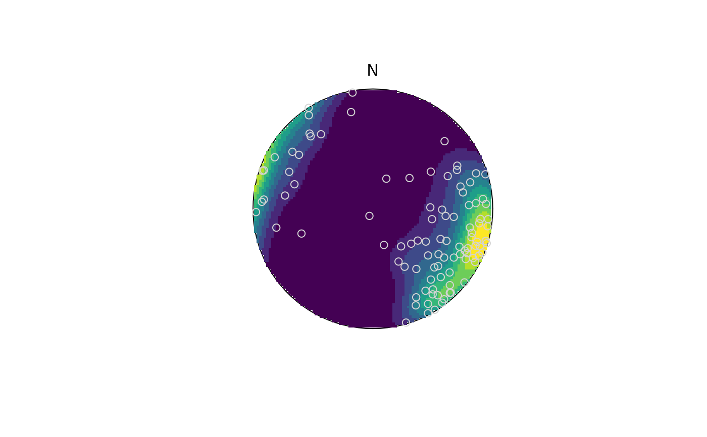
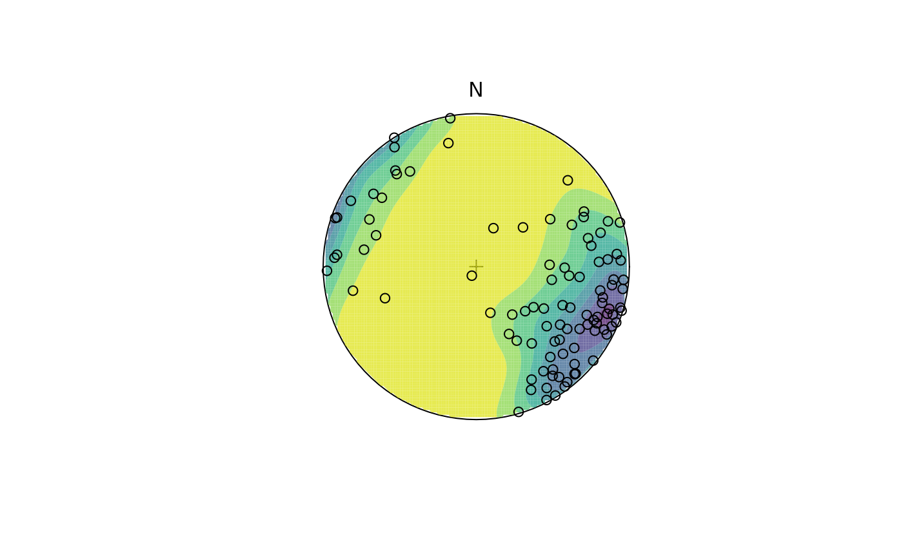

Linear Kamb counts and densities on the sphere
Usage
spherical_density(
x,
FUN = exponential_kamb,
n = 128L,
sigma = 3,
weights = NULL,
upper.hem = FALSE,
r = 1
)
projected_density(
x,
n = 128L,
sigma = 3,
weights = NULL,
upper.hem = FALSE,
r = 1
)
stereo_density(
x,
FUN = exponential_kamb,
n = 128L,
sigma = 3,
weights = NULL,
upper.hem = FALSE,
r = 1,
type = c("contour", "contour_filled", "image"),
nlevels = 10L,
col.palette = viridis,
col = NULL,
add = TRUE,
col.params = list(),
...
)Arguments
- x
Object of class
"line"or"plane"or'spherical.density'(for plotting only).- FUN
density estimation function; one of
exponential_kamb()(the default), kamb_count, andschmidt_count().- n
integer. Gridzise. 128 by default.
- sigma
numeric. Radius for Kamb circle used for counting. 3 by default.
- weights
(optional) numeric vector of length of
azi. The relative weight to be applied to each input measurement. The array will be normalized to sum to 1, so absolute value of theweightsdo not affect the result. Defaults toNULL- upper.hem
logical. Whether the projection is shown for upper hemisphere (
TRUE) or lower hemisphere (FALSE, the default).- r
numeric. radius of stereonet circle
- type
character. Type of plot:
'contour'for contour lines,'contour_filled'for filled contours, or'image'for a raster image.- nlevels
integer. Number of contour levels for plotting
- col.palette
a color palette function to be used to assign colors in the plot.
- col
colour(s) for the contour lines drawn. If
NULL, lines are color based oncol.palette.- add
logical. Whether the contours should be added to an existing plot.
- col.params
list. Arguments passed to
col.palette- ...
Value
list containing the stereographic x and coordinates of of the grid, the counts, and the density.
Examples
set.seed(20250411)
test <- rfb(100, mu = Line(120, 10), k = 5, A = diag(c(-1, 0, 1)))
test_densities <- spherical_density(x = test, n = 100, sigma = 3, weights = runif(100))
stereo_density(test_densities, type = "image", add = FALSE)
stereo_point(test, col = "lightgrey", pch = 21)

stereoplot(guides = FALSE)
stereo_point(test, col = "lightgrey", pch = 19)
stereo_density(test_densities, type = "contour", add = TRUE)

stereo_density(test_densities, type = "contour_filled", add = FALSE, col.params = list(direction = -1, begin = .05, end = .95, alpha = .75))
stereo_point(test, col = "black", pch = 21)